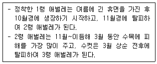
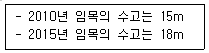
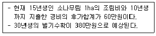
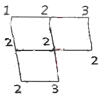
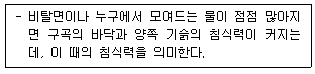
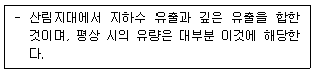

산림기사 (2020-06-06 기출문제)
1과목: 조림학
1. 종자 발아 시험에서 일정 기간 내의 발아 종자수를 시험에 사용한 전체 종자수에 대한 백분율로 나타낸 것은?
- 효율
- 순량률
- 발아율
- 발아세
(정답률: 79%)

2. 생가지치기를 하는 경우 절단면이 썩을 위험성이 가장 큰 수종은?
- Acer palmatum
- Pinus densiflota
- Cryptomeria japonica
- Chamaecyparis obtusa
(정답률: 78%)
3. 택벌작업을 통한 갱신방법에 대한 설명으로 옳은 것은?
- 양수 수종 갱신이 어렵다.
- 병충해에 대한 저항력이 낮다.
- 임목벌채가 용이하여 치수 보존에 적당하다.
- 일시적인 벌채량이 많아 경제적으로 효율적이다.
(정답률: 78%)
4. 옻나무, 피나무, 콩과 수목 종자의 발아를 촉진시키는 방법으로 가장 적합한 것은?
- 환원법
- 황산처리법
- 침수처리법
- 고저온처리법
(정답률: 73%)
5. 종자가 발아하기에 적합한 환경에서 발아하지 못하는 휴면에 해당하지 않는 것은?
- 배휴면
- 종피휴면
- 이차휴면
- 생리적 휴면
(정답률: 71%)
6. 수목의 측아 발달을 억제하여 정아우세를 유지시켜주는 호르몬은?
- 옥신
- 지베렐린
- 사이토키닌
- 아브시스산
(정답률: 82%)
7. 산림에 해당되지 않는 것은?
- 휴양 및 경관 자원
- 집단적으로 자라고 있는 대나무와 그 토지
- 산림의 경영 및 관리를 위하여 설치한 도로
- 집단적으로 자라고 있던 입목이 일시적으로 없어지게 된 토지
(정답률: 55%)
8. 간벌에 대한 설명으로 옳지 않은 것은?
- 가지치기 작업 이전에 실시한다.
- 생산될 목재의 형질을 좋게 한다.
- 수목의 직경 생장을 촉진하고 연륜폭이 넓어진다.
- 수목의 수액이동 정기지인 겨울철에 실시하는 것이 좋다.
(정답률: 72%)
9. 실생묘 생산을 위한 임목 종자의 파종량 계산에 필요한 인자가 아닌 것은?
- 순량율
- 종자 발아율
- 잔존 묘목수
- 발아묘 생장율
(정답률: 75%)
10. 산림토양 내에 존재하는 질소에 대한 설명으로 옳은 것은?
- 호기성 세균은 질산태 질소를 암모늄태질소로 변화시키는 과정에서 중심 역할을 한다.
- 산성이 강한 산림토양에서는 질산화작용에 의해 질소 성분이 주로 질산태 질소 형태로 존재한다.
- 동식물의 사체가 분해되면 처음에 질산태질소가 생성되며 그 후에 세균에 의해 암모늄태 질소로 변화된다.
- 산성이 강한 산림토양에서는 세균보다 진균이 동식물의 사체를 암모늄 형태의 질소로 분해하는데 더 크게 기여한다.
(정답률: 52%)
11. 삽목 작업에 대한 설명으로 옳지 않은 것은?
- 삽수의 끝눈은 남향으로 향하게 한다.
- 비가 온 후 상면이 습하면 작업을 하지 않는다.
- 작업 중 삽수가 건조하거나 눈이 상하지 않도록 주의한다.
- 삽목 토양으로는 배수성이 좋은 토양 보다는 양료가 충분히 있는 양토 계통의 토양을 이용하는 것이 좋다.
(정답률: 76%)
12. 양엽과 비교한 음엽에 대한 설명으로 옳지 않은 것은?
- 두께가 얇다.
- 광포화점이 높다.
- 책상조직이 엉성하다.
- 엽록소의 함량이 많다.
(정답률: 76%)
13. 이중정방향으로 묘간거리 5m로 1ha에 식재되는 묘목의 본수는?
- 200본
- 800본
- 2000본
- 8000본
(정답률: 51%)
14. 산림이나 묘포장의 토양 산도에 대한 설명으로 옳은 것은?
- 묘포 토양은 pH 6.5 이상이 되어야 좋다.
- pH 7.4∼8.0 토양에서는 침엽수종의 생육에 유리하다.
- pH 4.0∼4.7 토양에서는 망간, 알루미늄이 다량 용해되어 수목의 생육에 적합하다.
- pH 6.6∼7.3 토양에서는 미생물의 활동이 왕성하고 양료의 이용이 높으며 부식의 형성이 쉽게 진전된다.
(정답률: 66%)
15. 토양의 무기양료에 대한 요구도가 가장 낮은 수종은?
- Zelkova serrata
- Abies Holophylla
- Juniperus chinensis
- Quercus acutissima
(정답률: 39%)
16. 조림목이 심어진 줄에 따라 잡초목을 제거하는 풀베기 작업방법은?
- 점베기
- 줄베기
- 모두베기
- 둘레베기
(정답률: 92%)
17. 모수작업에 대한 설명으로 옳은 것은?
- 소경재 생산을 목적으로 벌기를 짧게 하는 갱신 방법이다.
- 모수를 제외하고 성숙한 임목만을 벌채하여 갱신을 유도하는 방법이다.
- 비교적 짧은 갱신기간 중에 몇 차례에 걸친 벌채로 작업 구역에 있는 임목이 완전히 제거된다.
- 새로 형성된 임분은 모수가 상층을 구성하는 것을 제외하고는 동령림으로 되지만, 모수가 많으면 이단림으로 볼 수 있다.
(정답률: 58%)
18. 수목의 뿌리를 통하여 흡수된 질소, 인, 칼륨 등의 무기양료가 잎까지 이동되는 주요 통로가 되는 조직은?
- 수
- 사부
- 목부
- 수지관
(정답률: 62%)
19. 외떡잎식물의 특징이 아닌 것은?
- 떡잎이 한 장이다.
- 엽맥은 그물맥이다.
- 관다발 조직이 줄기 내에 흩어져 있다.
- 보통 원뿌리가 없는 수염뿌리를 가지고 있다.
(정답률: 71%)
20. 대면적 개벌 천연하종갱신에 대한 설명으로 옳은 것은?
- 작업 소요기간이 길다.
- 이령림 형성에 유리하다.
- 양수의 갱신에 적합하다.
- 토양의 이화화적 성질이 좋아진다.
(정답률: 72%)
2과목: 산림보호학
21. 산불 발생 시 수행하는 직접 소화법이 아닌 것은?
- 맞불 놓기
- 토사 끼얹기
- 불털이개 사용
- 소화약제 항공살포
(정답률: 83%)
22. 병원균이 종자의 표면에 부착해서 전반되는 수목병은?
- 잣나무 털녹병
- 왕벚나무 혹병
- 밤나무 줄기마름병
- 오리나무 갈색무늬병
(정답률: 55%)
23. 수목에 가장 많은 병을 발생시키는 병원체는?
- 선충
- 균류
- 바이러스
- 파이토플라스마
(정답률: 82%)
24. 향나무 녹병 방제 방법에 대한 설명으로 옳지 않은 것은?
- 중간기주에는 8∼9월에 적정 농약을 살포한다.
- 향나무에서는 3∼4월과 7월에 적정 농약을 살포한다.
- 향나무와 중간기주는 서로 2km 이상 떨어지도록 한다.
- 향나무 부근에 산사나무, 모과나무 등의 장미과 수목을 심지 않는다.
(정답률: 50%)
25. 저온에 의함 수목 피해에 대한 설명으로 옳지 않은 것은?(오류 신고가 접수된 문제입니다. 반드시 정답과 해설을 확인하시기 바랍니다.)
- 조상은 늦가을에 수목이 완전히 휴면하기 전에 내린 서리로 인한 피해이다.
- 동상은 겨울철 수목의 생육휴면기에 발생하여 연약한 묘목에 피해를 준다.
- 상주는 봄에 식물의 발육이 시작된 후 급격한 기온 저하가 일어나 줄기가 손상되는 것이다.
- 상렬은 추운지방에서 밤에 수액이 얼어서 부피가 증대되어 수간의 외층이 냉각 수축하여 갈라지는 현상이다.
(정답률: 65%)
26. 수목을 가해하는 해충 방제 방법으로 옳지 않은 것은?
- 성 페로몬을 이용한 방법은 친환경적 방제 방법이다.
- 방사선을 이용한 해충의 불임 방법은 국제적으로 금지되어 있다.
- 생물적 방제는 다른 생물을 이용하여 해충군의 밀도를 억제하는 방법이다.
- 공항, 항만 등에서 식물 검역을 실시하여 국내로 해충이 유입되지 않도록 한다.
(정답률: 84%)
27. 번데기로 월동하는 해충은?
- 대벌레
- 솔나방
- 미국흰불나방
- 잣나무넓적잎벌
(정답률: 77%)
28. 장미 모자이크병 방제 방법에 대한 설명으로 옳지 않은 것은?
- 매개충을 구제한다.
- 많은 잎에 모자이크병 병징이 나타난 수목은 제거한다.
- 바이러스에 감염된 어린 대목을 38℃에서 약 4주간 열처리한다.
- 바이러스에 감염되지 않은 대목과 접수를 사용하여 건전한 묘목을 육성한다.
(정답률: 54%)
29. 모잘록병 방제 방법으로 옳지 않은 것은?
- 질소질 비료를 많이 준다.
- 병든 묘목을 발견 즉시 뽑아 태운다.
- 병이 심한 묘포지는 돌려짓기를 한다.
- 묘상이 과습하지 않도록 배수와 통풍에 주의한다.
(정답률: 87%)
30. 오동나무 빗자루병을 매개하는 곤충은?
- 진딧물
- 끝동매미충
- 마름무늬매미충
- 담배장님노린재
(정답률: 73%)
31. 농약을 살포하여 수목의 줄기, 잎 등에 약제가 부착되어 식엽성 해충이 먹이와 함께 약제를 섭취하여 독작용을 일으키는 살충제는?
- 기피제
- 유인제
- 소화중독제
- 침투성 살충제
(정답률: 69%)
32. 다음 설명에 해당하는 해충은?

- 호두나무잎벌레
- 참나무재주나방
- 도토리거위벌레
- 솔껍질깍지벌레
(정답률: 72%)
33. 대기오염 물질인 오존으로 인하여 제일 먼저 피해를 입는 수목의 세포는?
- 엽육세포
- 표피세포
- 상피세포
- 책상조직세포
(정답률: 57%)
34. 북방수염하늘소에 대한 설명으로 옳지 않은 것은?
- 성충의 우화 최성기는 5월경이다.
- 성충은 수세가 쇠약한 수목이나 고사목에 산란한다.
- 솔수염하늘소와 마찬가지로 소나무재선충을 매개한다.
- 연 2회 발생하고, 유충으로 월동하며, 1년에 3회 발생하는 경우도 있다.
(정답률: 78%)
35. 대추나무 빗자루병에 대한 설명으로 옳지 않은 것은?
- 매개충은 마름무늬매미충이다.
- 병든 수목을 분주하면 병이 퍼져나간다.
- 광범위 살균제로 수간주사하여 방제한다.
- 꽃봉오리가 잎으로 변하는 엽화현상으로 인해 열매가 열리지 않는다.
(정답률: 58%)
36. 다음 각 해충이 주로 가해하는 수종으로 옳지 않은 것은?
- 광릉긴나무좀-참나무류
- 미국흰불나방-소나무류
- 복숭아심식나방-사과나무
- 버즘나무방패벌레-물푸레나무
(정답률: 80%)
37. 자낭균에 의해 발생하는 수목병은?
- 뽕나무 오갈병
- 잣나무 털녹병
- 벚나무 빗자루병
- 삼나무 붉은마름병
(정답률: 70%)
38. 수목에 충영을 형성하는 해충은?
- 텐트나방
- 아까시잎혹파리
- 복숭아유리나방
- 느티나무벼룩바구미
(정답률: 68%)
39. 소나무 재선충병의 매개충 방제를 위한 나무주사에 대한 설명으로 옳지 않은 것은?
- 나무주사 시기는 5∼7월이다.
- 약효 지속 기간은 약 5개월이다.
- 약제는 티아메톡삼 분산성액제를 사용한다.
- 약제 주입량 기준은 흉고직경(cm) 당 0.5mL 이다.
(정답률: 40%)
40. 해충을 생물적으로 방제하는 방법에 대한 설명으로 옳은 것은?
- 식재할 때 내충성 품종을 선정한다.
- BT 수화제를 이용하여 솔나방 등을 방제한다.
- 생리활성 물질인 키틴합성 억제제를 이용한다.
- 임목밀도를 조절하여 건전한 임분을 육성한다.
(정답률: 68%)
3과목: 임업경영학
41. 임목수관의 지상투영면적 백분율을 나타내는 임분밀도의 척도는?
- 상대밀도
- 임분밀도지수
- 상대공간지수
- 수관경쟁인자
(정답률: 50%)
42. 손익분기점 분석을 위한 가정으로 옳지 않은 것은?
- 제품의 생산능률은 변화한다.
- 제품 한 단위당 변동비는 항상 일정하다.
- 고정비는 생산량의 증감에 관계없이 항상 일정하다.
- 제품의 판매가격은 판매량이 변동하여도 변화하지 않는다.
(정답률: 72%)
43. 다음 조건에서 프레슬러(Pressler) 공식을 이용한 임목의 수고생장률은?

- 약 0.4%
- 약 3.6%
- 약 36.4%
- 약 44.4%
(정답률: 59%)
44. 벌기가 20년인 활엽수 맹아림의 임목가는 40만원이다. 마르티나이트(Martineit) 식으로 계산한 15년생의 임목가는?
- 112,500원
- 150,000원
- 225,000원
- 350,000원
(정답률: 64%)
45. 입목의 가격을 산정하기 위한 방법으로 시장역산가 공식에 사용하지 않는 인자는?
- 조재율
- 간벌수익
- 자본회수기간
- 원목의 시장단가
(정답률: 51%)
46. 다음 조건에서 글라저(Glaser)의 보정식에 따른 15년생 현재의 평가대상 임목가는?

- 800,000원
- 812,500원
- 850,000원
- 887,500원
(정답률: 34%)
47. 임목재적 측정 시 가장 먼저 할 일은?
- 조사목 선정
- 조사목 측정
- 조사구역 설정
- 임분의 현존량 추정
(정답률: 83%)
48. 종합원가계산 방법에 대한 설명으로 옳지 않은 것은?
- 공정벌 원가계산방법이라고도 한다.
- 제품의 원가를 개개의 제품단위별로 직접 계산하는 방법이다.
- 같은 종류와 규격의 제품이 연속적으로 생산되는 경우에 사용한다.
- 생산된 제품의 전체원가를 총생산량으로 나누어 단위 원가를 산출한다.
(정답률: 66%)
49. 벌구식 택벌작업에서 맨 처음 벌채된 벌구가 다시 택벌될 때까지의 소요기간을 무엇이라고 하는가?
- 벌기령
- 윤벌기
- 벌채령
- 회귀년
(정답률: 76%)
50. 숲길의 조성·관리 연차별계획에 포함되어야 할 사항은?
- 1년 단위 연차별 투자실적 및 계획
- 5년 단위 연차별 투자실적 및 계획
- 10년 단위 연차별 투자실적 및 계획
- 20년 단위 연차별 투자실적 및 계획
(정답률: 65%)
51. 자본장비도에 대한 설명으로 옳지 않은 것은?
- 종사자 1인당 자본액이다.
- 종사자 수를 총자본으로 나눈 것이다.
- 일반적으로 고정자본에서 토지를 제외한다.
- 경영의 총자본은 고정자본과 유동자본의 합이다.
(정답률: 52%)
52. 임업이율의 성격으로 옳지 않은 것은?
- 현실이율이 아니고 평정이율이다.
- 단기이율이 아니고 장기이율이다.
- 대부이자가 아니고 자본이자이다.
- 명목적 이율이 아니고 실질적 이율이다.
(정답률: 77%)
53. 산림경영의 지도원칙 중 경제원칙이 아닌 것은?
- 공공성
- 수익성
- 보속성
- 생산성
(정답률: 55%)
54. 생태·문화·역사·경관·학술적 가치의 보전에 필요한 산림은?
- 수원함양림
- 생활환경보전림
- 산지재해방지림
- 자연환경보전림
(정답률: 74%)
55. 산림의 경제성 분석방법 중 현금흐름할인법에 해당하지 않는 것은?
- 회수기간법
- 순현재가치법
- 내부수익률법
- 편익비용비율법
(정답률: 47%)
56. 산림수확 조절방법 중 수리계획법이 아닌 것은?
- 장기계획법
- 선형계획법
- 목표계획법
- 정수계획법
(정답률: 36%)
57. 산림문화 휴양에 관한 법률에서 정의된 국민의 정서함양, 보건휴양 및 산림교육 등을 위하여 조성한 산림에 해당하는 것은?
- 삼림욕장
- 치유의 숲
- 숲속야영장
- 자연휴양림
(정답률: 79%)
58. 임분재적 측정방법으로 전수조사에 해당되는 것은?
- 목측
- 표본조사
- 매목조사
- 계통적 추출
(정답률: 60%)
59. Huber식에 의한 수간석해 방법으로 옳지 않은 것은?
- 구분의 길이를 2m로 원판을 채취한다.
- 반경은 일반적으로 5년 간격으로 측정한다.
- 벌채점의 위치는 가슴높이인 지상 1.2m로 한다.
- 단면의 반경은 4방향으로 측정한 값의 평균값이다.
(정답률: 63%)
60. 감가상각비에 대한 설명으로 옳지 않은 것은?
- 시간의 경과에 따른 부패, 부식 등에 의한 가치의 감소를 포함한다.
- 고정자산의 감가원인은 물리적 원인과 기능적 원인으로 나눌 수 있다.
- 새로운 발명이나 기술진보에 따른 사용가치의 감가는 감가상각비로 처리하지 않는다.
- 시장변화 및 제조방법 등의 변경으로 인하여 사용할 수 없게 된 경우에도 감가상각비로 처리한다.
(정답률: 82%)
4과목: 임도공학
61. 임도 설계속도가 20km/시간일 때 일반지형에서 최소곡선반지름 기준은?
- 12m
- 15m
- 20m
- 30m
(정답률: 54%)
62. 임도 시공 시 토사지역에서 절토 경사면의 기울기 기준은?
- 1 : 0.3∼0.5
- 1 : 0.3∼0.8
- 1 : 0.8∼1.2
- 1 : 0.8∼1.5
(정답률: 62%)
63. 임도 밀도를 산출하기 위한 해석적 방법으로 옳은 것은?
- 몇 개의 예정노선을 계획하고 이익과 비용에 의해 비교 판단한다.
- 예정 개설 노선의 노선도를 작성하고 계산과 이론으로 최적 임도를 산출한다.
- 몇 개의 예정노선을 계획 작성하고 임지마다 최적의 노선배치에 의한 최적 임도를 선정한다.
- 예정노선의 노선도를 작성하지 않고 순수하게 계산만으로 이론적 최적임도 밀도를 산출한다.
(정답률: 47%)
64. 임도의 선형 설계에서 제약 요소가 아닌 것은?
- 시공 상에서의 제약
- 대상지 주요 수종에 의한 제약
- 사업비·유지관리비 등에 의한 제약
- 자연환경의 보존·국토보전 상에서의 제약
(정답률: 69%)
65. 임도 시공 방법에 대한 설명으로 옳은 것은?
- 성토 대상지에 있는 모든 임목은 사면다짐 등 노체 형성에 유리하므로 그대로 존치시킨다.
- 암석지역 중 급경사지 또는 가시권 지역에서의 암석 절취는 발파 위주로 시공한다.
- 토공작업 시 부족한 토사공급 또는 남은 토사의 처리가 필요한 경우에는 임지 밖에 사토장 또는 토취장을 지정한다.
- 노면 및 절토대상지에 있는 임목과 그 뿌리, 표토는 전량 제거하여 반출한다. 다만, 부식토는 사면복구에 활용할 수 있다.
(정답률: 46%)
66. 임도의 횡단 선형에 대한 설명으로 옳지 않은 것은?
- 길어깨의 너비는 50cm∼1m로 한다.
- 배향곡선의 중심선 반지름은 10m 이상으로 설치한다.
- 임도의 유효너비 기준은 길어깨 및 옆도량의 너비를 합친 3m 이다.
- 곡선부의 중심선 반지름은 내각이 155° 이상인 경우 곡선을 설치하여 않을 수 있다.
(정답률: 64%)
67. 개설 비용이 저렴하고, 토사발생량도 적으며, 상향집재작업에 가장 적합한 임도는?
- 사면임도
- 계곡임도
- 능선임도
- 복합임도
(정답률: 58%)
68. 임도 시공에서 다짐작업에 사용되는 토공 기계로 가장 거리가 먼 것은?
- 불도저
- 탬핑롤러
- 진동 콤팩터
- 모터그레이더
(정답률: 48%)
69. 임도 설계 과정에서 가장 먼저 실시하는 업무는?
- 예측
- 답사
- 예비조사
- 공사 수량 산출
(정답률: 81%)
70. 컴퍼스측량에서 발생하는 자침편차 중 일차에 해당하는 변화는?
- 0‘∼5’
- 5‘∼10’
- 15‘∼20’
- 20‘∼25’
(정답률: 69%)
71. 최소곡선반지름의 크기에 영향을 주는 인자가 아닌 것은?
- 임도 밀도
- 도로의 너비
- 반출할 목재의 길이
- 차량의 구조 및 운행속도
(정답률: 66%)
72. 평판측량에 있어서 어느 다각형을 전진법에 의하여 측량하였다. 이때 폐합오차가 20cm 발생하였다면 측점 C의 오차 배분량은? (단, AB=50m, BC=40m, CD=5m, DA=5m)
- 0.10m
- 0.14m
- 0.18m
- 0.20m
(정답률: 51%)
73. 수준 측량에서 시점의 지반고가 100m이고, 전시의 합은 120.5m, 후시의 합은 110.5m 일 때 종점의 지반고는?
- 90m
- 100m
- 110m
- 120m
(정답률: 51%)
74. 임도망의 특성을 나타내는 지표가 아닌 것은?
- 임도 밀도
- 임도 간격
- 평균집재거리
- 임도 곡선반지름
(정답률: 50%)
75. 임도에서 대피소의 설치 간격 기준은?
- 100m 이내
- 300m 이내
- 500m 이내
- 1,000m 이내
(정답률: 81%)
76. 집재가선을 설치할 때 본줄을 설치하기 위한 집재기 쪽의 지주를 무엇이라 하는가?
- 머리기둥
- 꼬리기둥
- 안내기둥
- 받침기둥
(정답률: 77%)
77. 다음과 같은 지형에서 직사각형 기둥법에 의한 토적량은? (단, 사각형의 면적은 200m2로 모두 동일함.)

- 1,200m3
- 1,250m3
- 1,300m3
- 1,350m3
(정답률: 57%)
78. 임도의 횡단선형에서 길어깨의 기능이 아닌 것은?
- 시거의 여유 공간
- 폭설 시 제설 공간
- 보행자의 통행 공간
- 차량의 주행상 여유 공간
(정답률: 51%)
79. 곡선설치법에서 교각법에 의해 곡선을 설치할 때 교각이 32°15‘, 곡선반지름이 200m일 경우 접선길이는?
- 약 58m
- 약 65m
- 약 75m
- 약 83m
(정답률: 41%)
80. 임도의 설계기준으로 중심선 측량에서 측점 간격은?
- 5m
- 10m
- 20m
- 50m
(정답률: 53%)
5과목: 사방공학
81. 사방공사용 재래 초본류에 해당하는 것은?
- 억새
- 오리새
- 겨이삭
- 우산잔디
(정답률: 46%)
82. 양단면적이 각각 10m2, 20m2이고, 양단면의 거리가 20m일 때 양단면평균법에 의한 토사량은?
- 300m3
- 400m3
- 500m3
- 600m3
(정답률: 65%)
83. 계류의 상류에 쌓는 소규모 공작물로 사방댐과 모습이 비슷하나 규모가 작고 토사퇴적 기능이 없으며 반수면만 존재하는 것은?
- 수제
- 골막이
- 누구막이
- 기슭막이
(정답률: 75%)
84. 산사태의 발생요인에서 내적요인에 해당하는 것은?
- 강우
- 지진
- 벌목
- 토질
(정답률: 77%)
85. 척박하고 건조한 지역에서 비교적 잘 자라며, 맹아갱신이 잘 이루어지는 사방녹화용 주요 목본식물은?
- 단풍나무
- 가시나무
- 아까시나무
- 테다소나무
(정답률: 73%)
86. 다음 설명에 해당하는 것은?

- 유송력
- 운반력
- 소류력
- 수직응력
(정답률: 66%)
87. 콘크리트 측구에 흐르는 유적이 0.35m2이고, 평균 유속이 4m/s일 때 유량은?
- 0.14m3/s
- 1.14m3/s
- 1.40m3/s
- 11.43m3/s
(정답률: 66%)
88. 다음 설명에 해당하는 것은?

- 직접유출
- 간접유출
- 기저유출
- 표면유출
(정답률: 65%)
89. 황폐계류유역에 해당하지 않는 것은?
- 토사생산구역
- 토사유과구역
- 토사퇴적구역
- 토사억제구역
(정답률: 78%)
90. 사방댐 안정조건의 검토 항목에서 옳지 않은 것은?
- 유출에 대한 안정
- 전도에 대한 안정
- 제체파괴에 대한 안정
- 기초지반 지지력에 대한 안정
(정답률: 66%)
91. 흙골막이에서 제체를 축설하는 흙쌓기 비탈면의 기울기 기준은?
- 대수면과 반수면이 다같이 1:1 보다 완만하게 하여야 한다.
- 대수면과 반수면이 다같이 1:1.5 보다 완만하게 하여야 한다.
- 대수면은 1:1.5, 반수면은 1:1 보다 완만하게 하여야 한다.
- 대수면은 1:1, 반수면은 1:1.5 보다 완만하게 하여야 한다.
(정답률: 46%)
92. 막깬돌의 길이는 앞면의 몇 배 이상으로 하는가?
- 0.5배
- 1.0배
- 1.5배
- 2.0배
(정답률: 79%)
93. 야계사방에 해당하는 공종이 아닌 것은?
- 사방댐
- 흙막이
- 바닥막이
- 기슭막이
(정답률: 50%)
94. 땅밀림과 비교한 산사태에 대한 설명으로 옳지 않은 것은?
- 점성토를 미끄럼면으로 하여 속도가 느리게 이동한다.
- 주로 호우에 의하여 산정에서 가까운 산복부에서 많이 발생한다.
- 흙덩어리가 일시에 계곡, 계류를 향하여 연속적으로 길게 붕괴하는 것이다.
- 비교적 산지 경사가 급하고 토층 바닥에 암반이 깔린 곳에서 많이 발생한다.
(정답률: 77%)
95. 석재를 이용하여 공작물을 시공할 때 식생 도입이 곤란한 기울기가 1:1 보다 완만한 비탈면이나 수변지역의 기슭막이에 사용되는 방법은?
- 찰쌓기
- 골쌓기
- 메쌓기
- 돌붙이기
(정답률: 46%)
96. 산사태 예방공사 중 지하수 배제공사에 속하는 것은?
- 주입공사
- 집수정공사
- 돌림수로내기
- 침추수방지공사
(정답률: 52%)
97. 중력침식에 대한 설명으로 옳지 않은 것은?
- 붕괴형 침식, 동상 침식, 지활형 침식, 유동형 침식 등이 있다.
- 유수나 바람과 같은 독립된 외력의 작용에 의하여 발생하는 침식이다.
- 토층이 수분으로 포화되어 중력작용으로 토층이 집단적으로 밀리는 현상이다.
- 중력의 영향으로 비탈면에서 토사와 석력의 지괴가 이동하는 침식의 특수 형태이다.
(정답률: 66%)
98. 해안사방의 정사울세우기에 대한 설명으로 옳지 않은 것은?
- 울타리의 유효높이는 보통 1.0∼1.2m 로 한다.
- 울타리의 방향은 주풍방향에 직각이 되게 한다.
- 구획의 크기는 한 변의 길이가 7∼15m 정도인 정사각형이나 직사각형으로 한다.
- 해안으로부터 이동하는 모래를 배후에 퇴적시켜 인공모래언덕을 조성하기 위해 설치한다.
(정답률: 64%)
99. 계속되는 강우로 인하여 토층이 포화상태가 되면서 산지 전면에 걸쳐 얇은 층으로 발생하는 침식은?
- 면상침식
- 우격침식
- 누구침식
- 구곡침식
(정답률: 76%)
100. 사방시설의 공작물도를 작성하는데 기준이 되며 설계홍수량 산정에 쓰이는 강우확률 빈도는?
- 30년
- 50년
- 80년
- 100년
(정답률: 78%)